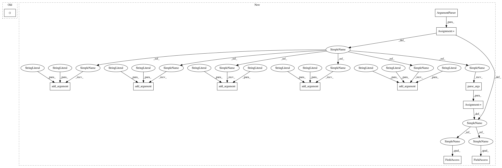

8e5522ff50124a9ba05a7cdddfff7df8ebbafc14,examples/q_learning_grid.py,,,#,10
Before Change
logger.setLevel(logging.INFO)
// MDP
mdp = envs.GridWorld(3, 3, (2, 2))
// Spaces
state_space = mdp.observation_space
After Change
from PyPi.utils import logger as l
parser = argparse.ArgumentParser()
parser.add_argument("environment", type=str,
help="The name of the environment to solve.")
parser.add_argument("algorithm", type=str,
help="The name of the algorithm to run.")
parser.add_argument("--train-episodes", type=int, default=100,
help="Number of train episodes.")
parser.add_argument("--test-episodes", type=int, default=10,
help="Number of test episodes.")
parser.add_argument("--gamma", type=float, default=0.9, help="Discount factor")
parser.add_argument("--action-regression", action="store_true",
help="If true, a separate regressor for each action"
"is used.")
parser.add_argument("--logging", default=1, type=int, help="Logging level")
args = parser.parse_args()
args = loader.load(args)
// Logger
logger = l.Logger(args.logging)
// MDP
mdp = envs.GridWorld(8, 8, (7, 7))
// Spaces
state_space = mdp.observation_space
action_space = mdp.action_space
// Policy
epsilon = .5
policy = pi.EpsGreedy(epsilon)
// Regressor
discrete_actions = mdp.action_space.values
apprx_params = dict(shape=(8, 8))
approximator = apprxs.Regressor(approximator_class=apprxs.Tabular,
**apprx_params)
if args.action_regression:
approximator = apprxs.ActionRegressor(approximator, discrete_actions)
// Agent
In pattern: SUPERPATTERN
Frequency: 3
Non-data size: 12
Instances
Project Name: AIRLab-POLIMI/mushroom
Commit Name: 8e5522ff50124a9ba05a7cdddfff7df8ebbafc14
Time: 2017-02-26
Author: carlo.deramo@gmail.com
File Name: examples/q_learning_grid.py
Class Name:
Method Name:
Project Name: AIRLab-POLIMI/mushroom
Commit Name: 8e5522ff50124a9ba05a7cdddfff7df8ebbafc14
Time: 2017-02-26
Author: carlo.deramo@gmail.com
File Name: examples/q_learning_grid.py
Class Name:
Method Name:
Project Name: UFAL-DSG/tgen
Commit Name: d04134375b6fafc03efec776728e2334a927e37f
Time: 2017-03-30
Author: odusek@ufal.mff.cuni.cz
File Name: run_tgen.py
Class Name:
Method Name: rerank_cl_eval
Project Name: UFAL-DSG/tgen
Commit Name: d04134375b6fafc03efec776728e2334a927e37f
Time: 2017-03-30
Author: odusek@ufal.mff.cuni.cz
File Name: run_tgen.py
Class Name:
Method Name: rerank_cl_train